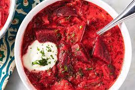

Borscht

Perfect Homemade Borscht
Borsch is a classic Ukrainian dish whose main ingredint, beets, give it its signature purplish red colour. This dish is relatively cheap to make and is absolutely delicious.
Ingredients
- 3 tsp extra virgin olive oil
- 1 lb stewing beef
- 1 large onion
- 8 cups beef broth
- 4 large beets
- 4 carrots
- 1 large potato
- 2 cups thinly sliced cabbage
- 3/4 cups chopped fresh dill
- 3 TBSP red wine vinegar
- 1 cup sour cream
- salt and pepper to taste
Steps
- eat 2 teaspoons oil in a large, thick-bottomed pot on medium high heat. Add the shank slice or stew beef. Let the beef brown lightly on one side, then turn over.
Add the chopped onions to the pot. Let the onions cook and soften, about 5 minutes
- Pour 4 cups of the beef broth over the beef and onions in the pot. Bring to a boil. Lower the heat to a simmer. Cover and cook until the meat is falling-off-the-bone tender, about 1 hour and 30 minutes.
- reheat the oven to 400°F.
Peel and chop the beets, carrots, and potatoes into 1/2-inch pieces. Toss the beets and carrots with a teaspoon or two of olive oil and spread them out in a single layer on a foil lined roasting pan. Roast in preheated oven for 15 minutes
- oss the potatoes with olive oil and make room for them in the roasting pan, and roast everything an additional 15 minutes.
- nce the beef has cooked through until tender, remove from the pot, and take the pot off the heat. If you are using a beef shank, remove and discard any bone, connective tissue, and excess fat. Chop the meat into bite sized pieces.
- Skim off any excess fat from the liquid in the pot.
- Return the pot to the stove and add the remaining broth, the carrots, beets, and potato. Add the chopped meat to the pot, the sliced cabbage, and a half cup of the fresh dill. Bring to a simmer, and cook for another 15 minutes or so, until the cabbage is cooked through.
- dd the vinegar and season to taste with salt and freshly ground black pepper. (I use about 2 teaspoons of salt and 1 teaspoon of pepper, but the amount you use will depend on how salty your beef broth is to begin with.)
The soup is best made a day ahead. (The longer the soup sits, the more it will all turn the deep red color of beets.)
Serve ladled into bowls with a dollop of sour cream and a sprinkling of fresh dill.